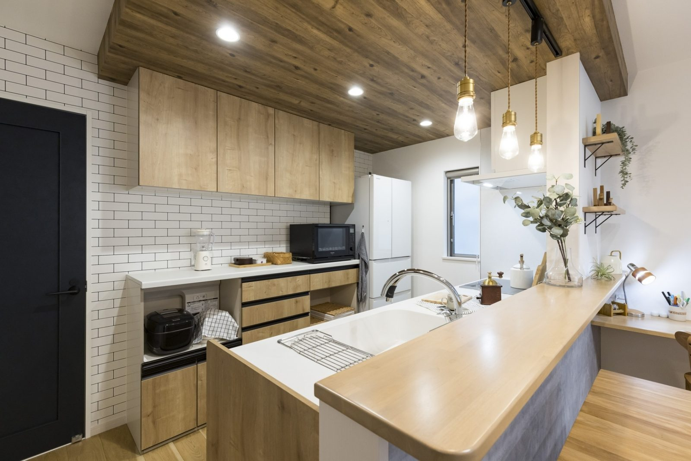
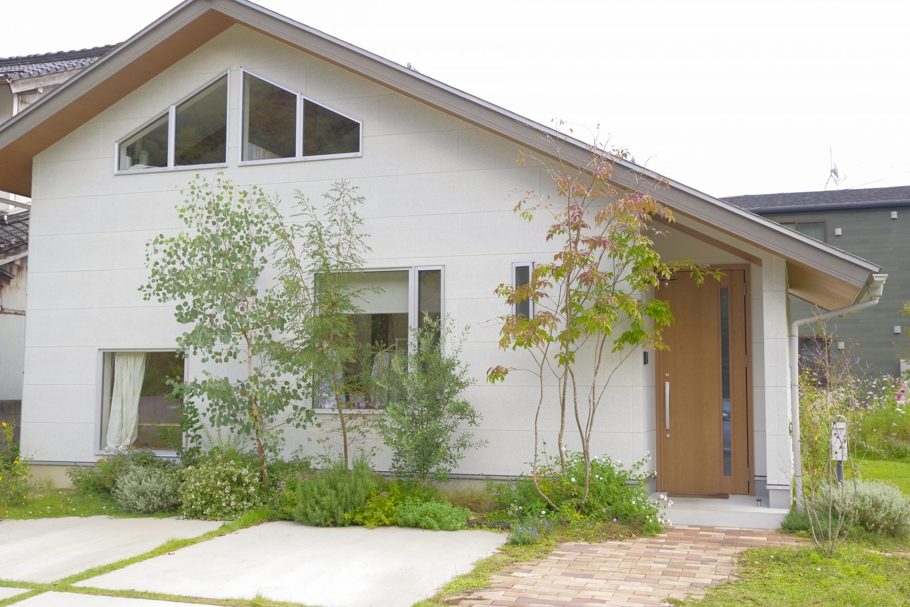
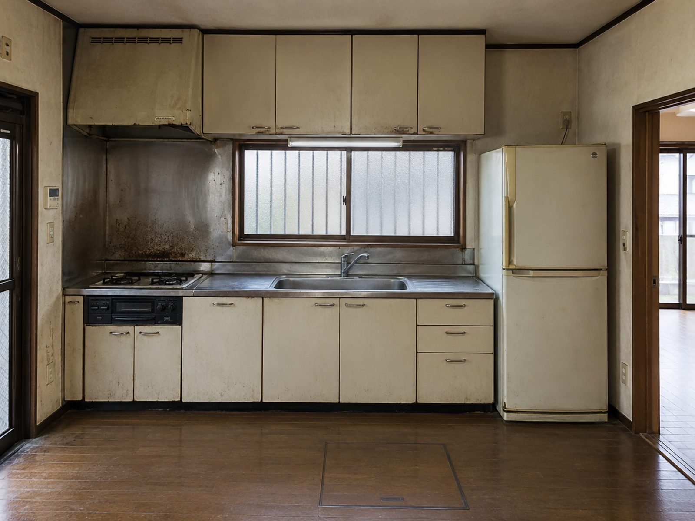
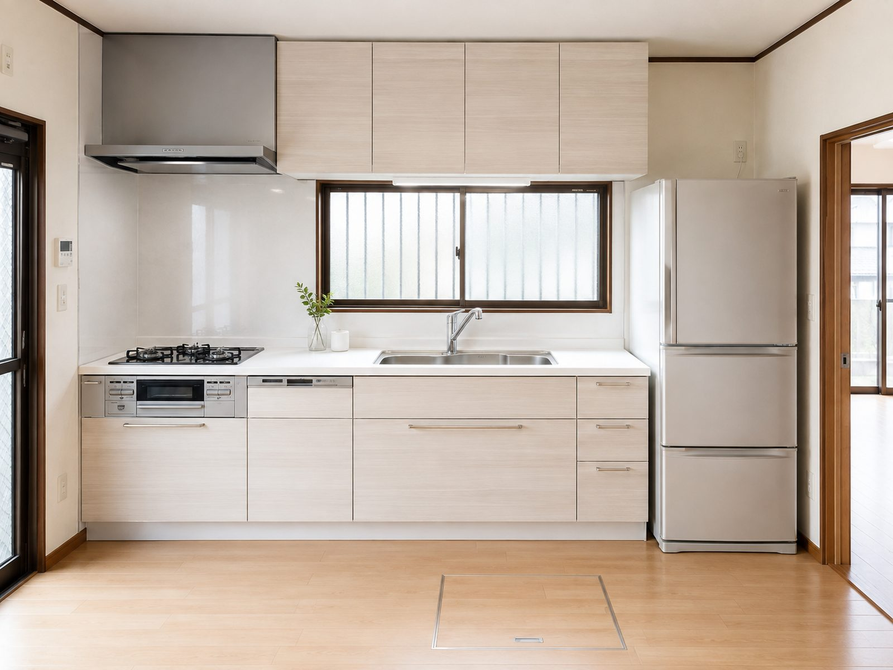
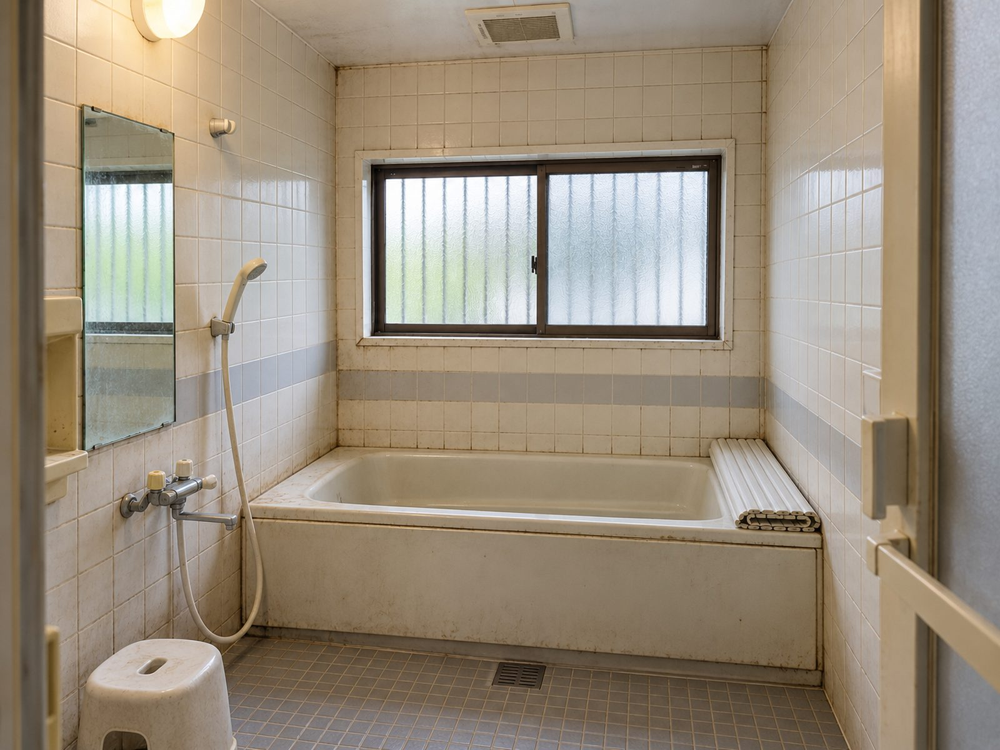
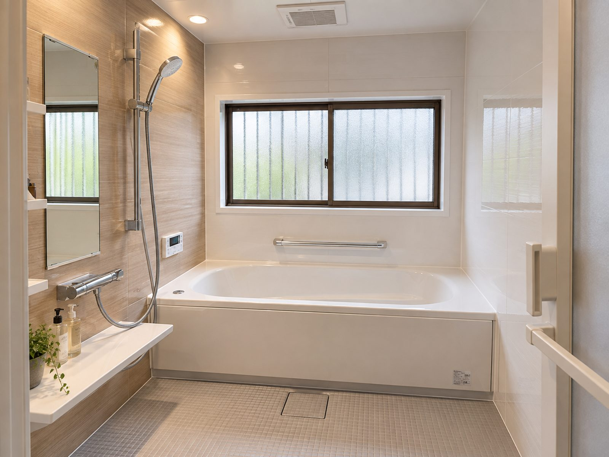
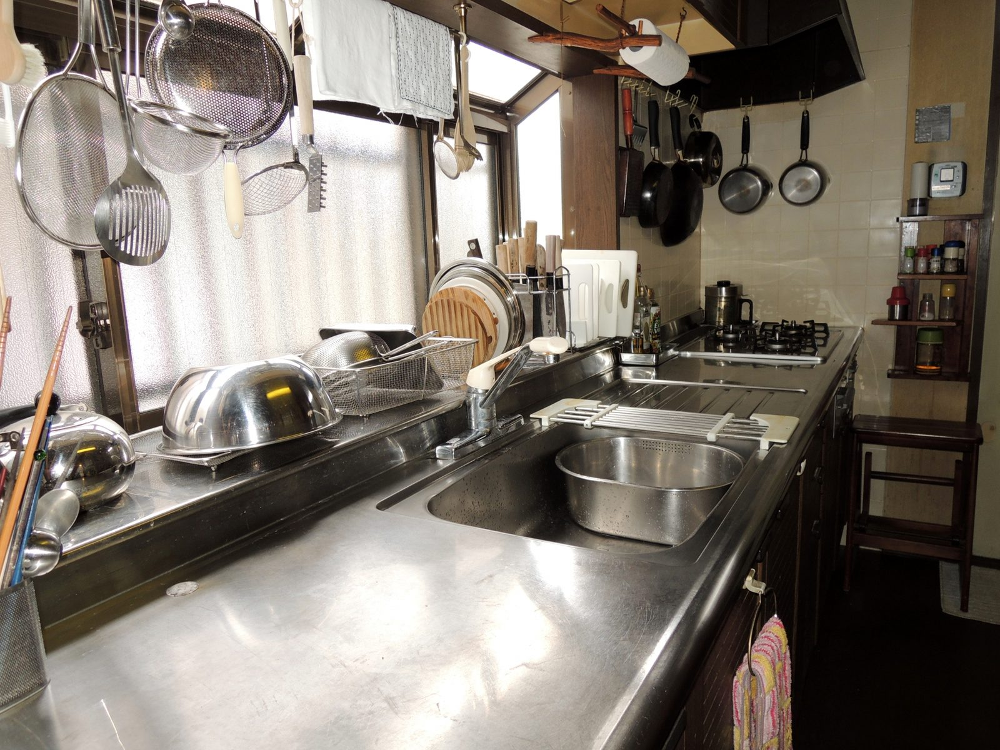
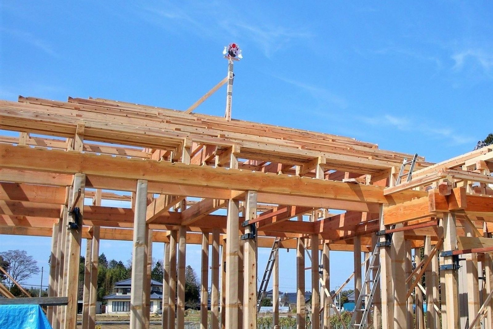
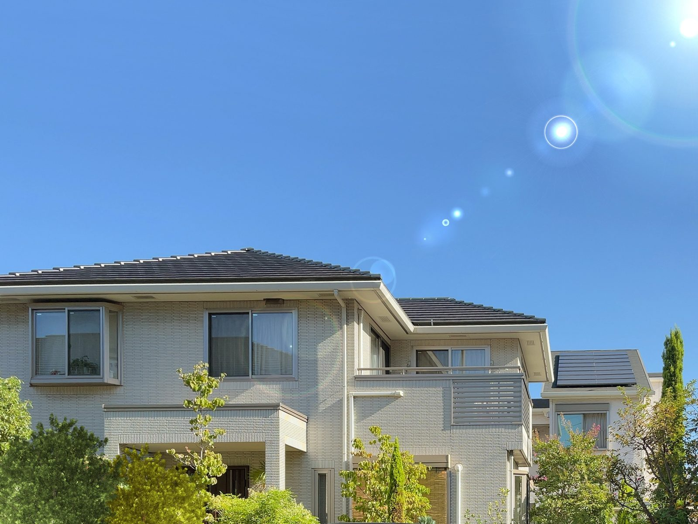

01キッチン
入れ替え、対面化、収納の見直し。動線から一緒に考えます。
目安60万円〜
山口市 ・ 地域密着リフォーム
山口の住まいに寄り添う、地域密着のリフォーム。キッチンひとつの入れ替えから、間取りの見直しまで。まずは「気になる場所」の写真を1枚、送ってみてください。
現地調査・お見積りは無料。しつこい営業はしません。

01 — Before / After
同じ場所、同じ角度で撮った施工前と施工後です。真ん中の線を左右に動かすと、変わったところがそのまま見えます。


BEFOREAFTER築38年の台所。配管はそのままに、キッチン本体と床・壁を一新。


BEFOREAFTER冬に寒かったタイル張りの浴室を、断熱ユニットバスに。手すりも追加。
※ 写真・工期・費用はすべて架空デモ用の例です。実在の物件ではありません。
03 — Works
きれいな写真の裏には、必ず最初の困りごとがあります。同じ悩みをお持ちなら、たぶんお役に立てます。

CASE 01 ／ キッチン・LDK
CASE 02 ／ 浴室
CASE 03 ／ 間取り変更
※ 事例の写真・数値はすべて架空デモ用の例です。実在の物件・お客様ではありません。
04 — Price
「いくらかかるか分からない」が、相談をためらう一番の理由だと思います。まずはざっくりの幅から。
「一式」ではなく、材料・工事・諸経費を分けてお出しします。減らせるところは一緒に減らします。
壁を開けて初めて分かることもあります。その場合も、勝手に進めず必ずご相談してから。
※ 金額はすべて架空デモ用の例です。実在の会社・料金ではありません。
05 — Flow
最初の一歩は、電話でも来店でもなく「写真を1枚送る」だけ。そこから先は、私たちが段取りします。
壁のひび、古いキッチン、寒い浴室。「これ、直せますか？」の一言で大丈夫です。営業時間内なら当日中にお返事します。
ご都合の良い日に伺い、実際に見て・測って・お話を聞きます。この段階で契約を迫ることはありません。
写真と図で「こう変わります」を説明。金額は項目ごとに。比較検討のために他社に見せていただいて構いません。
いつ、誰が、何をするか。ご近所へのご挨拶も私たちが行います。
その日の作業と翌日の予定を、写真つきでお送りします。お仕事中でも状況が分かります。
一緒に確認してお引き渡し。1年後に点検に伺います。小さな不具合はその場で直します。
06 — People

自社大工による施工くすのき工務店は、山口市で24年、住宅の新築とリフォームを続けてきた小さな工務店です。営業担当はおらず、現地調査からお引き渡しまで、代表か大工が直接お話しします。構造を知っている人間が見るから、「ここは触らない方がいい」も正直に言えます。
07 — Voice
実在のお客様の声ではありません。実際のサイトでは、許可をいただいた方の声を掲載します。
LINEで台所の写真を送っただけなのに、翌日には「こんなふうにできますよ」と絵を送ってもらえて、話が早かったです。
工事中、毎日その日の写真が届いたのが安心でした。仕事で家にいなくても、何をしているか分かるので。
「ここは直さなくていい」とはっきり言ってもらえたのが逆に信頼できました。結果的に予算より安く済みました。

08 — Area
山口市を中心に、車で30分圏内。
近いから、すぐ行けます。工事後の「ちょっと見てほしい」にも、ついでに寄れる距離を大事にしています。
09 — FAQ
はい。「直すべきか分からない」段階のご相談が一番多いです。現地調査のうえで「今は触らなくていい」とお伝えすることもあります。
キッチンや浴室など、ほとんどの工事は住みながら可能です。使えない期間の目安（例：浴室4日）を事前にお伝えします。
LINEの写真で「ざっくりの幅」を、現地調査の後に正式なお見積りをお出しします。お見積りは無料です。
断熱やバリアフリーなど、対象になる工事があります。その時点で使える制度をお調べして、申請のお手伝いもします。
まずLINEで写真を送ってください。近いので、すぐ見に伺います。1年後の無料点検もあります。
CONTACT
気になる場所を撮って送るだけ。営業時間内なら当日中にお返事します。現地調査・お見積りは無料です。
定休日：日曜・祝日 ／ 現地調査は土曜も可